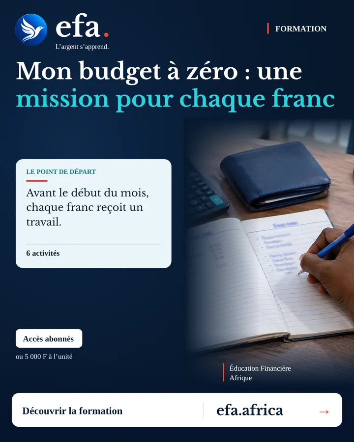

Votre argent.Votre question.Votre prochain pas.
Dites-nous ce que vous cherchez à faire. EFA vous aide à trouver par où commencer.
Je ne sais pas par où commencer → Faire mon diagnostic · 6 min, gratuit
Je sais déjà ce que je cherche
Voir clairComprendre mon argent→DéclicTrouver mon idée de business→Ma BRVMEt si j’avais investi ?→FormationApprendre à mon rythme→
Gratuit pour commencer · La finance, avec nos réalités.
Une réponse tout de suite
Les questions que l’on nous pose le plus. Une réponse courte, puis l’outil pour l’appliquer à votre cas.
CréditCombien me coûte vraiment un crédit ?Lire la réponse →PlacementOn me promet 30 % par mois, est-ce sérieux ?Lire la réponse →FamilleMa sœur me demande un prêt, que faire ?Lire la réponse →TerrainQue vérifier avant d’acheter un terrain ?Lire la réponse →TontineFaut-il entrer dans une tontine ?Lire la réponse →ÉpargneComment épargner quand on gagne peu ?Lire la réponse →
Se former, à son rythme
Les 57 ateliers, par thème →Où est passé mon argent ?Voir son mois, trouver les fuites Mon premier ordre à la Bourse (BRVM)Du compte à l’achat, pas à pas
Mon premier ordre à la Bourse (BRVM)Du compte à l’achat, pas à pas Mon activité gagne-t-elle de l’argent ?Ce qui reste vraiment
Mon activité gagne-t-elle de l’argent ?Ce qui reste vraiment

Mon budget à zéroUne mission pour chaque francMon premier ordre à la Bourse (BRVM)Du compte à l’achat, pas à pasMon activité gagne-t-elle de l’argent ?Ce qui reste vraimentDes situations d’ici, des exercices concrets. Vous préférez un parcours complet ? L’école EFA · Les ateliers avec Élysée Johnson
L’actu qui vous concerne
Toutes les actualités →Tout EFA, par besoin
185 contenus : chaque outil, chaque guide, chaque atelier. Touchez un thème pour l’ouvrir.
Comprendre et gérer mon argentBudget, épargne, réserve, crédit, dettes, retraite19
- Mon diagnostic financier
- Voir clair · Où est passé mon argent ?
- Mon budget à zéro
- Faire son budget en FCFA
- Budget et mobile money
- Les engagements et les exceptions
- Séparer les poches
- Épargner en Afrique et en Côte d’Ivoire
- Combien garder quand l’argent arrive ? Calculateur d’épargne et de tontine
- Où garder sa réserve
- Votre liberté financière
- Combien ce crédit me coûtera-t-il au total ?
- Renégocier une dette : quoi demander, à qui
- Consommer et acheter
- DAT et emprunts d’État : comment ça marche
- Préparer sa retraite
- Simulateur de décisions
- Tous les outils et simulateurs
- Trouver mon point de départ
Lancer et faire grandir mon activitéIdées de business, business plan, valeur de l’entreprise8
Investir et la Bourse (BRVM)Ma BRVM, le marché du jour, les SGI, les cours pour débuter30
- Ma BRVM · Et si j’avais investi ?
- Investir à la BRVM : par où commencer ?
- Mes premiers pas en Bourse
- Le marché aujourd’hui
- La semaine à la Bourse (BRVM)
- Les sociétés cotées
- Calendrier
- Obligations
- Acheter des actions à la Bourse (BRVM) : par une SGI
- Les SGI de la Bourse (BRVM)
- Comparer des SGI
- Investir en Bourse
- 10 questions à poser avant d’investir votre argent
- Se lancer en Bourse : les acteurs et la méthode
- Mon premier ordre à la Bourse (BRVM)
- École de la Bourse
- École de la Bourse (parcours)
- L’essentiel de la Bourse
- Lire le marché
- Lire la Bourse (BRVM) en investisseur averti
- J’investis pour quel projet ?
- Toutes les façons d’investir
- Investir : la Bourse (BRVM)
- Assurance-vie et épargne
- Terrain et immobilier
- OPCVM et FCPE expliqués
- De la tontine au club d’investissement
- Mon portefeuille face à la baisse
- Les personnalités du marché
- Frais d’un aller-retour en actions
La tontineComprendre, choisir, cotiser sans se faire avoir9
Famille, maison et moments de vieTerrain, chantier, enfants, décès, prêter à un proche, arnaques11
- Acheter un terrain sans se faire avoir
- Construire par étapes : le budget du chantier
- Organiser son argent avant l’arrivée d’un enfant
- Les études des enfants et l’héritage
- Après le décès d’un proche
- Les papiers que ma famille doit pouvoir retrouver
- Prêter de l’argent à un proche
- Dois-je prêter 300 000 FCFA à ma sœur ?
- La solidarité africaine, une assurance sans contrat
- Avant de confier votre argent
- Les arnaques
Me formerLes ateliers, les parcours, les certificats, les écoles EFA73
- Tous les ateliers, par thème
- Mon budget au quotidien
- Épargner et placer
- Investir en Bourse (BRVM)
- Crédit et dettes
- Mon activité
- Famille et retraite
- Éviter les arnaques
- Ateliers avec Élysée Johnson
- L’école EFA : les parcours
- Certificat local Fondations
- Certificat local Maîtrise
- Certificat local Patrimoine
- Certificat CEFA ★
- EFA Traders
- EFA Corporate Finance
- EFA CEO Challenge
- Le quiz de la semaine
- Min’Fin, la série d’éducation financière
Les 54 ateliers, de A à Z
- Acheter sa première action à la BRVM
- Acheter un lot : l’état domanial d’abord
- Acheter, construire ou attendre
- Assurance-vie : ce que je signe
- Avant de confier son argent ou d’investir
- Bien choisir sa microfinance
- Bien utiliser mon crédit
- Ce que mon crédit coûte vraiment
- Comment fonctionne un fonds commun de placement ?
- Comprendre l’économie pour mieux investir
- Construire sa stratégie d’investissement
- Construire son portefeuille
- Ethereum, Solana et TON : qu’achetez-vous vraiment ?
- Faux conseiller, faux placement
- Financer les études de mon enfant
- Grandir avec le crédit
- Investir dans les placements à revenu fixe
- Investir dans une activité
- Investir et entreprendre quand les prix montent
- Investir pour les dividendes
- Investir sur un marché émergent
- Le crédit est-il fait pour moi ?
- Les bons du Trésor, de A à Z
- Les placements expliqués
- Lire les états financiers d’une entreprise cotée
- Lire un business plan comme un financeur
- Lire une société cotée
- Ma banque va-t-elle me prêter ?
- Ma réserve de sécurité
- Ma tontine devient un club d’investissement
- Ma tontine devient une spirale
- Maîtriser ses finances personnelles
- Mobile money et frais
- Mon activité gagne-t-elle vraiment de l’argent ?
- Mon budget qui tient
- Mon budget à zéro : une mission pour chaque franc
- Mon commerce n’a pas de comptabilité
- Où est passé l’argent de mon activité ?
- Où est passé mon argent ?
- Placements à court terme
- Placer selon mon horizon
- Préparer ma retraite : droits, besoins et décisions
- Préparer ma retraite sans pension
- Prêter à un proche, ou donner ?
- Quand le crédit va mal
- Recevoir une grosse somme
- Rembourser sans se noyer
- Rendement garanti : que vérifier ?
- Se préparer au décès d’un parent
- Sortir de mes dettes
- Un portefeuille qui paie mes factures
- Vente en réseau : combien ça rapporte ?
- Épargner ne suffit pas
- Éviter le surendettement